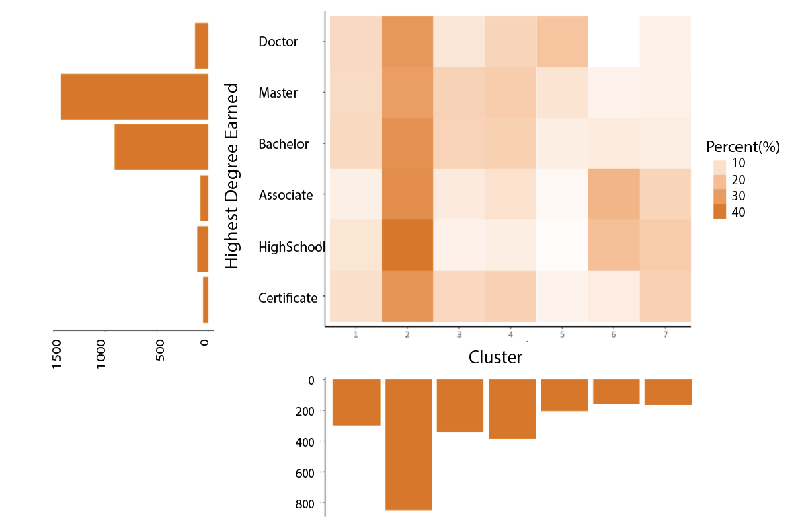

Sequence Clustering
Clustering post-military veteran career sequences and exploring these results
Transition Matrix
There are nine levels of job state: job zone (level) 1, job zone (level) 2, job zone (level) 3, job zone (level) 4, job zone (level) 5, transitional unemployment, unemployment, unemployment or retirement, and unknown job zone.
[Here comes a table that explains the job levels.]
In our sequence analysis, we want to categorize sequential pattern of the job levels. One approach for categorizing sequences is to compute the distance between two sequences. For example, we have two job state sequences and each sequence is composed of three states: \[S_1 = \{ \text{zone 1, zone 2, zone 3} \}\] \[S_2 = \{ \text{zone 1, zone 1, zone 3} \}\] The difference between \(S_1\) and \(S_2\) is at the second state where \(S_1\) has zone 2 while \(S_2\) has zone 1. To transform \(S_1\) to \(S_2\), we substitude zone 2 with zone 1 at state 2. We use the minimum number of substitution that is required to transform one sequence to another sequence to reflect the distance between these two sequences. This is known as "indels". However not all substitutions are the same: substitute zone 1 with zone 5 is way more costly than substituting with zone 2. Therefore, we use transition rate to estimate the cost to transform from one state to another state.
We constructed transition matrix \(T\) with dimension \(k \times k\), k being the number of job states. The transition matrix is composed of transition rates between each pair of states. \(T(i,j)\) represents the probability of a sample to convert from the current job state \(i\) to the next job state \(j\), for \(i \in [1,9], j \in [1,9]\). Thus the sum of each row is 1. Figure 1 shows the transition matrix.
Darker the color, higher the transition probability between two states. The job states on the diagnal of the transition matrix have the darkest color, meaning that our sample has a higher probability to stay in the same job state.
 \[\text{Fig 1. Original Transition Matrix}\]
\[\text{Fig 1. Original Transition Matrix}\]
Transition Matrix standardization
For sequence clustering, our next step is to construct a substitution-cost matrix \(SC\) using the formula \[SC(i,j) = 2 -T(i,j) -T(j,i)\]
Substitution-cost matrix reflects the cost for substituting a job state with another. \(SC(i,j)\) represent the cost for changing from the current job state \(i\) to the next job state \(j\), for \(i \in [1,9], j \in [1,9]\). We then use transition rate to construct substitution-cost matrix using the formula \[SC(i, j) = \begin{cases} 2-T(i,j)-T(j,i), & i \neq j\\ 0, & i=j \end{cases}\]
The consequence for the diagnal to have large transition probability is the consistent cost between job state \(i\) and \(j\) that \(SC(i, j)\) will be approximately 2. In order to make the difference between two different states more visible, we standardize the transition matrix by excluding the diagnal when constructing the transition matrix. Figure 2 shows the standardized transition matrix. Having diagnal as 0, we can better observe the difference of the transition probability between two different states.
\[\text{Fig 2. Standardized Transition Matrix}\]
Clustering
We identified 5185 post-military sequences, and there are 2113 (40.8%) distinct sequences. We identified 8 types of clusterings. We have type 1, 5, 6 clusters mainly composed of veterans in job zone 4. Specifically, veterans in type 1 cluster had few years' of transitional unemployment after exiting military before their job-zone-level 4 jobs.
 \[\text{Fig 3. Type 1 Clusters}\]
\[\text{Fig 3. Type 1 Clusters}\]
We do observe a career promotion among veterans in type 2 cluster where they started with job zone 3 and went into job zone 4.
 \[\text{Fig 4. Type 2 Clusters}\]
\[\text{Fig 4. Type 2 Clusters}\]
The remaining type 3, 7, 8 do no exibit a change in post-military career. Type 3 cluster is composed of jobs in job zone 5. Type 7 cluster is composed of jobs in job zone 1. And type 8 cluster is composed of jobs in job zone 3.
 {width=100% height=850px; margin-left: 50px; margin-right: 50px} \[\text{Fig 5. Type 3 Clusters}\]
{width=100% height=850px; margin-left: 50px; margin-right: 50px} \[\text{Fig 5. Type 3 Clusters}\]
 \[\text{Fig 6. Type 4 Clusters}\]
To understand how veterans developed different career trajectories, we investigated the relationship between gender, highest degree level and the career trajectory cluster they were associated with.
Do veterans' education background influence their career trajectory?
Here we are showing how many veterans with different degrees fall into each of these 8 clusters. Since the majority of our veteran sample had highest degree as bachelor's and master's degree, here we show the percentage of veterans fall into each of the eight clusters for each highest degree earned. Thus each row adds up to 1.
\[\text{Fig 7. Cluster Distribution for Different Levels of Education}\]
## Error in is.data.frame(y): object 'bg_vet_demographic' not found## Error in table(vet_df$cluster, vet_df$degree_highest): all arguments must have the same length## Error in 1:ncol(table): argument of length 0## Error in `colnames<-`(`*tmp*`, value = c("associate", "bachelor", "certificate", : attempt to set 'colnames' on an object with less than two dimensions## Error in `$<-.data.frame`(`*tmp*`, cluster, value = c("cluster1", "cluster2", : replacement has 8 rows, data has 0## Error in setnames(x, value): Can't assign 3 names to a 0 column data.table## Error in factor(degree, levels = rev(state)): object 'degree' not foundDo Female and Male Veterans have different career trajectory?
In our sample, we have 15.9% (N=824) female veterans, 84.1% (N=3666) male veterans. We conducted \(\chi^2\) test. Using 0.05 as the critical value, we conclude that female is statistically different from male in cluster 2 (p=0.0083), 5 (p<0.001), 6 (p=0.017), and 8 (0.042).
## Error: Problem with `filter()` input `..1`.
## x object 'gender' not found
## ℹ Input `..1` is `!is.na(gender)`.## Error in is.factor(x): object 'gender' not found## Error in is.factor(x): object 'gender' not found## Error in as.data.frame(gender): object 'gender' not found## Error in ggplot(gender, aes(cluster, gender, fill = perc)): object 'gender' not found## Error in is.data.frame(y): object 'bg_vet_demographic' not found## Error in table(vet_df$cluster, vet_df$gender): all arguments must have the same length## function (..., exclude = if (useNA == "no") c(NA, NaN), useNA = c("no",
## "ifany", "always"), dnn = list.names(...), deparse.level = 1)
## {
## list.names <- function(...) {
## l <- as.list(substitute(list(...)))[-1L]
## nm <- names(l)
## fixup <- if (is.null(nm))
## seq_along(l)
## else nm == ""
## dep <- vapply(l[fixup], function(x) switch(deparse.level +
## 1, "", if (is.symbol(x)) as.character(x) else "",
## deparse(x, nlines = 1)[1L]), "")
## if (is.null(nm))
## dep
## else {
## nm[fixup] <- dep
## nm
## }
## }
## miss.use <- missing(useNA)
## miss.exc <- missing(exclude)
## useNA <- if (miss.use && !miss.exc && !match(NA, exclude,
## nomatch = 0L))
## "ifany"
## else match.arg(useNA)
## doNA <- useNA != "no"
## if (!miss.use && !miss.exc && doNA && match(NA, exclude,
## nomatch = 0L))
## warning("'exclude' containing NA and 'useNA' != \"no\"' are a bit contradicting")
## args <- list(...)
## if (!length(args))
## stop("nothing to tabulate")
## if (length(args) == 1L && is.list(args[[1L]])) {
## args <- args[[1L]]
## if (length(dnn) != length(args))
## dnn <- if (!is.null(argn <- names(args)))
## argn
## else paste(dnn[1L], seq_along(args), sep = ".")
## }
## bin <- 0L
## lens <- NULL
## dims <- integer()
## pd <- 1L
## dn <- NULL
## for (a in args) {
## if (is.null(lens))
## lens <- length(a)
## else if (length(a) != lens)
## stop("all arguments must have the same length")
## fact.a <- is.factor(a)
## if (doNA)
## aNA <- anyNA(a)
## if (!fact.a) {
## a0 <- a
## a <- factor(a, exclude = exclude)
## }
## add.na <- doNA
## if (add.na) {
## ifany <- (useNA == "ifany")
## anNAc <- anyNA(a)
## add.na <- if (!ifany || anNAc) {
## ll <- levels(a)
## if (add.ll <- !anyNA(ll)) {
## ll <- c(ll, NA)
## TRUE
## }
## else if (!ifany && !anNAc)
## FALSE
## else TRUE
## }
## else FALSE
## }
## if (add.na)
## a <- factor(a, levels = ll, exclude = NULL)
## else ll <- levels(a)
## a <- as.integer(a)
## if (fact.a && !miss.exc) {
## ll <- ll[keep <- which(match(ll, exclude, nomatch = 0L) ==
## 0L)]
## a <- match(a, keep)
## }
## else if (!fact.a && add.na) {
## if (ifany && !aNA && add.ll) {
## ll <- ll[!is.na(ll)]
## is.na(a) <- match(a0, c(exclude, NA), nomatch = 0L) >
## 0L
## }
## else {
## is.na(a) <- match(a0, exclude, nomatch = 0L) >
## 0L
## }
## }
## nl <- length(ll)
## dims <- c(dims, nl)
## if (prod(dims) > .Machine$integer.max)
## stop("attempt to make a table with >= 2^31 elements")
## dn <- c(dn, list(ll))
## bin <- bin + pd * (a - 1L)
## pd <- pd * nl
## }
## names(dn) <- dnn
## bin <- bin[!is.na(bin)]
## if (length(bin))
## bin <- bin + 1L
## y <- array(tabulate(bin, pd), dims, dimnames = dn)
## class(y) <- "table"
## y
## }
## <bytecode: 0x556b8c7a6288>
## <environment: namespace:base>## Error in 1:nrow(table): argument of length 0## NULL## logical(0)References
[List your references here using APA format (or at least standardize all of the references using the same format).]